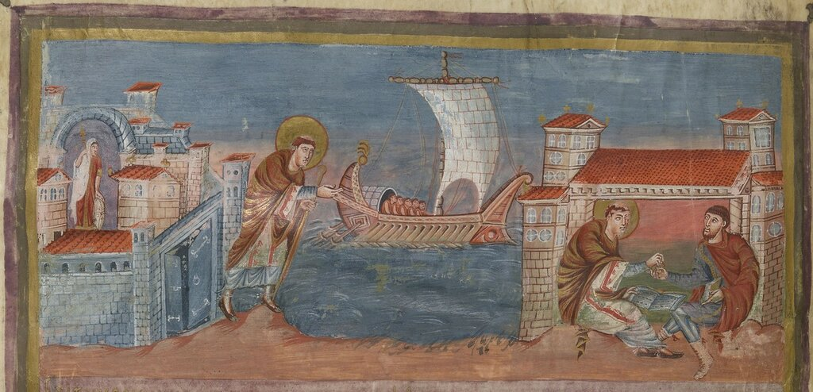
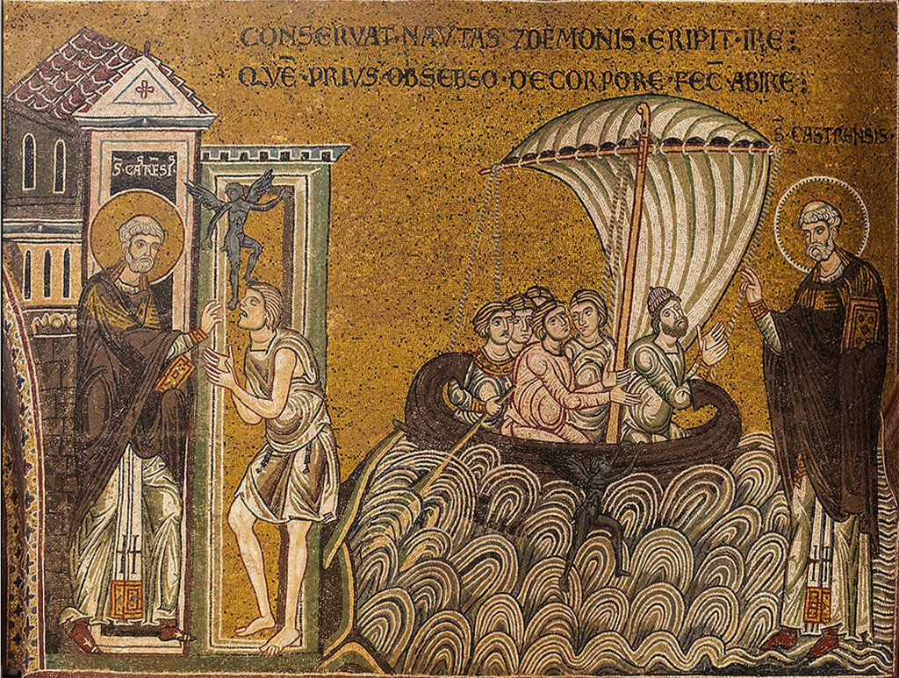
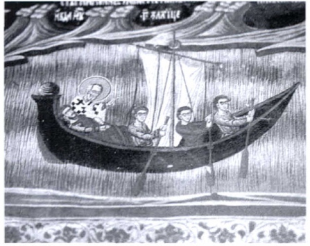
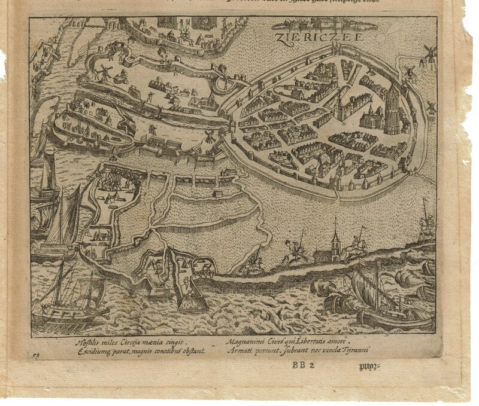
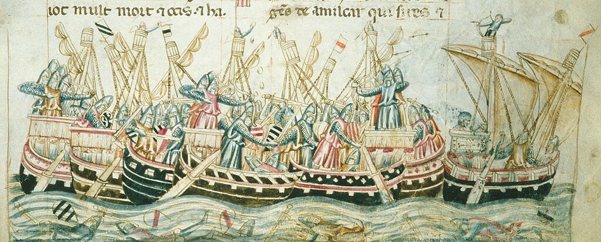
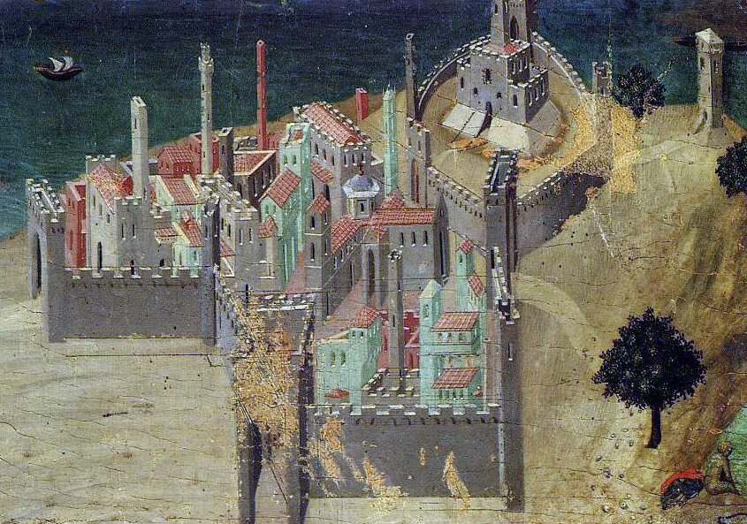
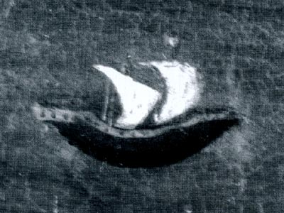
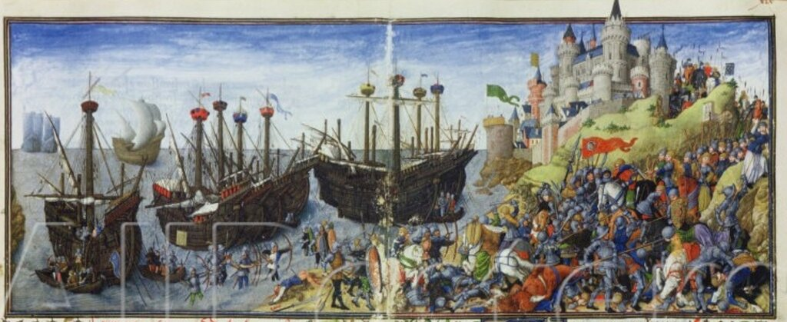
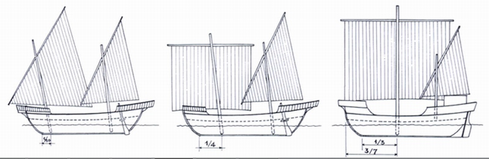

Мы с вами знакомимся сейчас с кораблями Средиземного моря той эпохи, когда там господствовал латинский парус и только-только появились свидетельства о кораблях с прямым парусным вооружением – когах или коках. В более ранних постах было отмечено, что , начиная с IX века, на средиземноморских судах прямой парус, характерный для кораблей римской эпохи, практически исчез.

>
Сцена из жизни Иеронима Стридонского. Миниатюра из Библии короля Карла Лысого. 846 г. (Paris, Bibliothèque Nationale, MS. Lat 1 f. 423 v.) Одно из последних изображений прямого паруса. Впрочем, это изображение, как и многие ему подобные, является всего лишь копией миниатюр из более ранних рукописей. Изображения же прямого паруса, не имеющие более ранних предшественников, исчезли еще в VI веке.
Утверждая, что прямой парус не появлялся на средиземноморских судах после IX века, мы основывались на дошедших до нас документах и изобразительных свидетельствах. Мне кажется, что выбрали мы при этом самый простой путь: нет изображения – не было и паруса. Но как говорится, простота хуже воровства. Нельзя даже и представить себе, что этот абсолютно простой парус, с интуитивно понятными способами крепления и управления, мог вот так просто выйти из употребления. И это при том, что с латинским парусом управляться и сейчас вряд ли смогут даже самые поднаторевшие в различных ремеслах наши современники, а прямой парус ставил на своих примитивных плавсредствах едва ли не каждый пацан: пара шестов, сколоченных крестом, да кусок брезента – и полный вперед. Кроме того, надо всегда иметь в виду, что за пятьсот почти лет (в рамках от 600 до 1000 гг.) мы едва ли насчитаем более трех работ, в которых содержится изображение парусов на кораблях Средиземноморья. Так что выборка здесь, как говорится, не репрезентативная.
Некоторые авторитетные исследователи морской истории считают, что изображений прямого паруса на кораблях Средиземного моря не было вплоть до XIV века. Но как быть тогда с этой мозаикой из архиепископского собора, расположенного в пригороде Палермо Монреале?

Создание мозаик Монреальского собора относится к 1183-1189 гг. Фото Nick Zambon.
Или эта фреска XIII века из византийской церкви в Пече (Косово):

Поэтому примем без доказательств (просто потому, что их у нас нет): на малых кораблях каботажного плавания средиземноморского бассейна, на речных судах, а также на тех, которые мы сейчас называем судами «река-море» использование прямого паруса не прекращалось. В связи с этим внесем поправки в наше собственное утверждение, сделанное ранее. В статье об эволюции парусного вооружения кораблей Средиземноморья мы сделали такую запись:
«В самом начале XIV века произошло событие, которое вернуло прямые паруса на Средиземное море. До наших дней информация об этом событии дошла благодаря «Хронике» флорентийца Джованни Виллани. Хроника написана не на латыни, как было принято в те времена, а на итальянском народном языке. Вот что мы читаем в записи на 1304 год:
In questo medesimo tempo certi di Baiona in Guascogna co lloro navi, le quali chiamano cocche, passarono per lo stretto di Sibilia, e vennero in questo nostro mare corseggiando, e feciono danno assai; e d’allora innanzi i Genovesi e’ Viniziani e’ Catalani usaro di navicare co le cocche, e lasciarono il navicare delle navi grosse per più sicuro navicare, e che sono di meno spesa: e questo fue in queste nostre marine grande mutazione di navilio.
«Люди из гасконской Байоны на кораблях, которые называются коги, прошли через Севильский пролив [Гибралтар - g._g.] и вошли в наше море как пираты, совершив очень большие разрушения. Немедленно вслед за этим генуэзцы, венецианцы и каталонцы начали использовать коги и перестали ходить на больших навах, что сделало их плавание более безопасным и менее дорогим и явилось великим переломом в мореплавании.»
Giovanni Villani - Nuova Cronica, гл. LXXVII
Это утверждение было сделано на основе суждений большого числа уважаемых морских историков нашего времени. Но видимо они, а вслед за ними и ваш покорный слуга, заблуждались. Мы просто вырвали приведенное выше суждение Виллани из контекста. А этот контекст состоит в том, что и генуэзцы, и венецианцы, да, видимо, и каталонцы были хорошо знакомы с когами еще до описанного выше события. Более внимательное изучение той же «Хроники» Виллани показывает, что в записи, сделанной годом ранее, в 1303 году, хронист описывает столкновение семи торговых галер, возвращавшихся из Фландрии, с английскими кораблями, в результате которого было уничтожено 20 и захвачено 10 когов а также убито множество англичан («sconfìssero 20 cocche ed uccisero molti inglesi; e ne presero 10»). А в памятном 1304 году имел место значительно более масштабный эпизод, чем рейд баскских пиратов – сражение при небольшом фламандском городе Зирикзее

План Зирикзее, 1595 год.
Объединенный франко-голландско-генуэзский флот под командованием будущего адмирала Франции Ренье Гримальди (первого правителя суверенной территории, которая является ныне государством Монако) в составе 16 генуэзских галер, 29 французских парусников (когов) из Кале, восьми когов из Испании и пяти небольших парусных кораблей из Голландии разгромил разношерстный флот под командованием Ги де Дампье́ра из 80 фламандских, английских, ганзейских, шведских кораблей, не менее 37 из которых были крупными когами.

Сражение при Зирикзее. Фрагмент иллюминированного манускрипта XIV века Histoire ancienne jusqu'à César . Происхождение – Неаполь, Италия. Анонимный хужожник. The British Library, Royal 20 D I f. 258
Так что не стоит, видимо, относить знакомство средиземноморских моряков с прямым парусом на когах к незначительному рейду баскских пиратов; генуэзцы, в частности, плотно сталкивались с северными когами при куда более значительных обстоятельствах.
Но мы сейчас говорим не о кораблях с прямым парусом, а о каракках, кораблях со СМЕШАННЫМ парусным вооружением, несущим наряду с прямыми парусами также и латинский парус. Именно благодаря появлению на этих кораблях смешанного вооружения они и были выделены в особый класс – каракки.
Первым живописным изображением корабля со смешанным парусным вооружением можно считать появление его на фреске Амброджо Лоренцетти (1290-1348), итальянского живописца сиенской школы. Работа датируется 1337 годом.

Дадим увеличенное изображение интересующего нас фрагмента

Совсем близко по времени к этому изображению можно отнести миниатюру из «Тезеиды» Джованни Боккаччо.

Осада замка амазонок отрядом Тезея. Миниатюра из манускрипта 1340-41г. (Ms 2617, Osterreichische Nationalbibliothek, Вена, Австрия)
В вопросе появления кораблей со смешанным вооружением имеется две группы исследователей: одни считают, что эти корабли появились в результате установки мачты с латинским парусом на североевропейские корабли типа кога с прямыми парусами, другие – что прямой парус моряки Средиземного моря поставили на свои корабли, оснащенные латинским парусом. Вопрос предпочтения той или иной версии подобен выбору между тупоконечниками и остроконечникам из истории Гулливера: нет пока объективных оснований для этого выбора, все пока еще остается делом вкуса. Лично я склоняюсь ко второму варианту. И вот почему: вся терминология, связанная со снастями такелажа и рангоутом прямого паруса на средиземноморских кораблях той эпохи очень близка к терминологии, относящейся к латинским парусам и практически не содержит терминов с североевропейским корнями, что было бы неизбежным в случае заимствования прямого паруса с севера.
Приведем один из возможных вариантов появления двухмачтового корабля со смешанным парусным вооружением (каракки)

(По Sergio Bellabarba и Edoardo Guerreri)
Дальнейшее обсуждение вопроса последует.